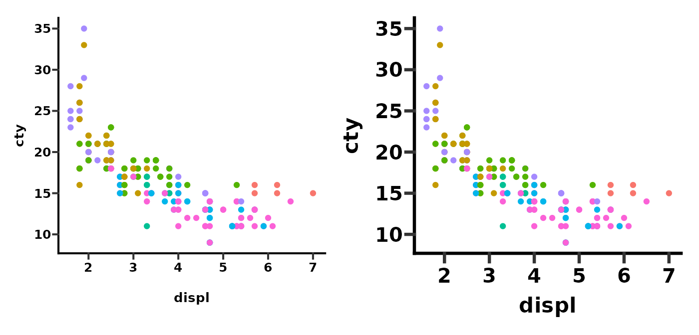
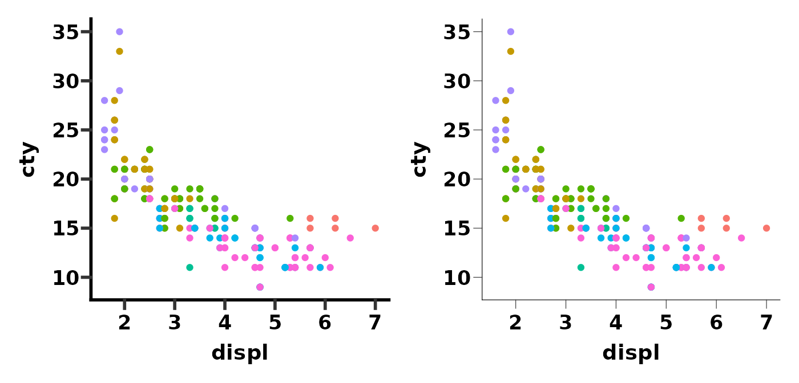
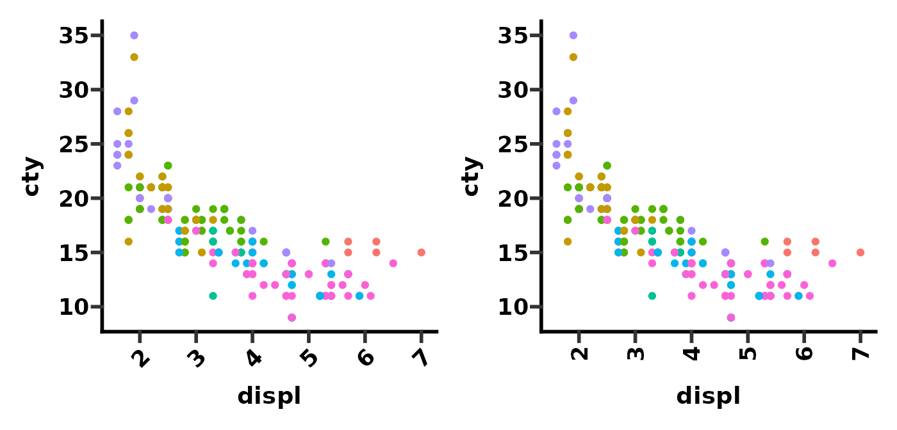
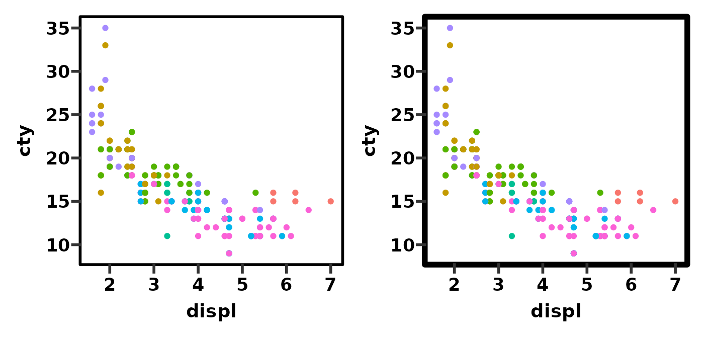
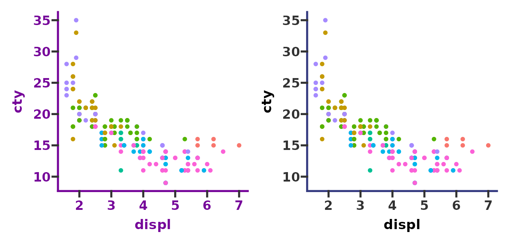
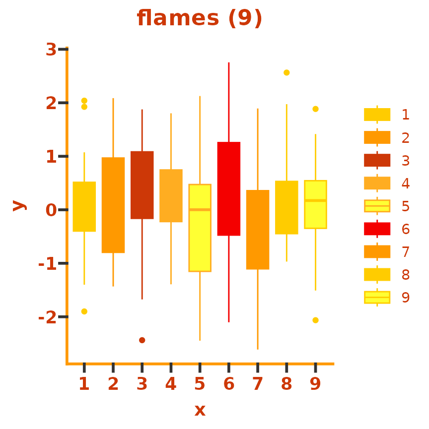

theme_prism() is arguably the most useful part of this
package. It is the main tool which is used make ggplots look like they
were made in GraphPad Prism. This vignette goes through of the options
included in the function, and also shows you how to make your own
theme.
Using theme_prism()
First we’ll just define a base plot to use for the rest of the vignette.
# define a base plot
base <- ggplot(mpg, aes(x = displ, y = cty)) +
geom_point(aes(colour = class))Then we’ll apply theme_prism() and see how it looks just
with the default settings. By default the:
- Fontface for all text is bold except the legend text
- Font size is 14 pt
- Legend title is hidden (by setting
legend.title = element_blank()) - Background is white and all text and lines are black
- Default palette is
"black_and_white"
You can easily bring back the legend title by overriding the
legend.title element.
# apply default theme
p1 <- base +
theme_prism() +
guides(colour = guide_legend(position = "inside")) +
theme(legend.position.inside = c(0.8, 0.75),
legend.key.height = unit(10, "pt"))
p2 <- base +
theme_prism() +
guides(colour = guide_legend(position = "inside")) +
theme(legend.position.inside = c(0.8, 0.75),
legend.key.height = unit(10, "pt"),
legend.title = element_text())
p1 + p2
The overall theme text size is adjusted with the
base_size argument, as with the standard ggplot2 themes
such as theme_bw().
# redefine base plot without a legend for convenience
base <- ggplot(mpg, aes(x = displ, y = cty)) +
geom_point(aes(colour = class), show.legend = FALSE)
# adjust overall theme size
p1 <- base + theme_prism(base_size = 10)
p2 <- base + theme_prism(base_size = 16)
p1 + p2
By default the base_line_size and
base_rect_size arguments scales with the
base_size, but these can be overridden.
# adjust overall theme size with specific line size
p1 <- base + theme_prism(base_size = 14)
p2 <- base + theme_prism(base_size = 14, base_line_size = 0.2)
p1 + p2
You can also change the base_fontface (e.g. bold, plain,
italic) and base_family (crossplatform compatibility fonts
e.g. serif, sans, mono, or specific fonts e.g. Arial).
# change fontface or font family
p1 <- base + theme_prism(base_fontface = "plain")
p2 <- base + theme_prism(base_family = "mono")
p1 + p2
theme_prism() includes the axis_text_angle
argument which is a convenient way to rotate the x axis text (allowed
angles are: 0, 45, 90, or 270).
# change x axis text angle
p1 <- base + theme_prism(axis_text_angle = 45)
p2 <- base + theme_prism(axis_text_angle = 90)
p1 + p2
Lastly, you can put a square border around the plot using the
border argument. Unfortunately, you need to turn of
clipping in order for this to work/appear correct.
# add a border and adjust its thickness
p1 <- base + theme_prism(border = TRUE) +
coord_cartesian(clip = "off")
p2 <- base + theme_prism(border = TRUE, base_rect_size = 2) + # adjust thickness
coord_cartesian(clip = "off")
p1 + p2
Theme palettes
There are several different colour palettes that are built into
theme_prism().
# see names of available theme_prism() palettes
names(ggprism_data$themes)
#> [1] "autumn_leaves" "beer_and_ales" "black_and_white" "candy_bright"
#> [5] "candy_soft" "colorblind_safe" "colors" "diazo"
#> [9] "earth_tones" "evergreen" "greenwash" "muted_rainbow"
#> [13] "office" "purple_passion" "shades_of_gray" "summer"
#> [17] "the_blues" "winter_soft" "stained_glass" "warm_pastels"
#> [21] "flames" "floral" "inferno" "magma"
#> [25] "mustard_field" "neon" "pastels" "pearl"
#> [29] "plasma" "prism_dark" "prism_light" "quiet"
#> [33] "spring" "starry" "viridis" "waves"
#> [37] "blueprint" "fir" "ocean" "sunny_garden"
#> [41] "wool_muffler" "warm_and_sunny" "winter_bright" "all_null"Using the palettes is simple.
# try out some different theme palettes
p1 <- base + theme_prism(palette = "purple_passion")
p2 <- base + theme_prism(palette = "candy_bright")
p1 + p2
You can preview a single palette using the
preview_theme() function. It shows a sample plot with the
theme applied (as well as scale_colour_prism() and
scale_fill_prism()). See this
page for images of all 43 available theme_prism()
palettes.
preview_theme("flames")
Note that several of the palettes happen to be identical. This is not a bug but just how they were designed in GraphPad Prism.
# compare two identical theme palettes
p1 <- base + theme_prism(palette = "black_and_white")
p2 <- base + theme_prism(palette = "plasma")
p1 + p2It is good to try matching theme_prism() palettes with
their corresponding scale_colour_prism() and/or
scale_fill_prism() palettes.
# try out two more theme palettes and their corresponding colour palettes
p1 <- base + theme_prism(palette = "summer") +
scale_colour_prism(palette = "summer")
p2 <- base + theme_prism(palette = "stained_glass") +
scale_colour_prism(palette = "stained_glass")
p1 + p2
Make your own ggprism theme
Many of these theme palettes are pretty ugly and not suitable for
publication. Even GraphPad themselves say that palettes such as
summer and mustard_fields “are
less than appealing”.
Therefore, it would be good to be able to make your own themes based
off of theme_prism(). Fortunately, because
theme_prism() is a ‘complete’ theme it means that using it
to make your own theme is super easy. You can read this chapter from
the official ggplot2 book, or this
blog post if you want to learn more of the specifics of making your
own themes.
Otherwise, an example is given below.
# define a new theme function based on the stained_glass palette
theme_new <- function(base_size = 14,
base_family = "sans",
base_fontface = "bold",
base_line_size = base_size / 14,
base_rect_size = base_size / 14,
axis_text_angle = 0,
border = FALSE) {
theme_prism(palette = "stained_glass",
base_size = base_size,
base_family = base_family,
base_fontface = base_fontface,
base_line_size = base_line_size,
base_rect_size = base_rect_size,
axis_text_angle = axis_text_angle,
border = border) %+replace%
theme(panel.background = element_rect(fill = "white",
colour = NA),
plot.background = element_rect(fill = "red",
colour = NA),
axis.line = element_line(colour = "black"),
axis.ticks = element_line(colour = "black"))
}
# compare theme_prism() and our new theme function
p1 <- base + theme_prism()
p2 <- base + theme_new()
p1 + p2